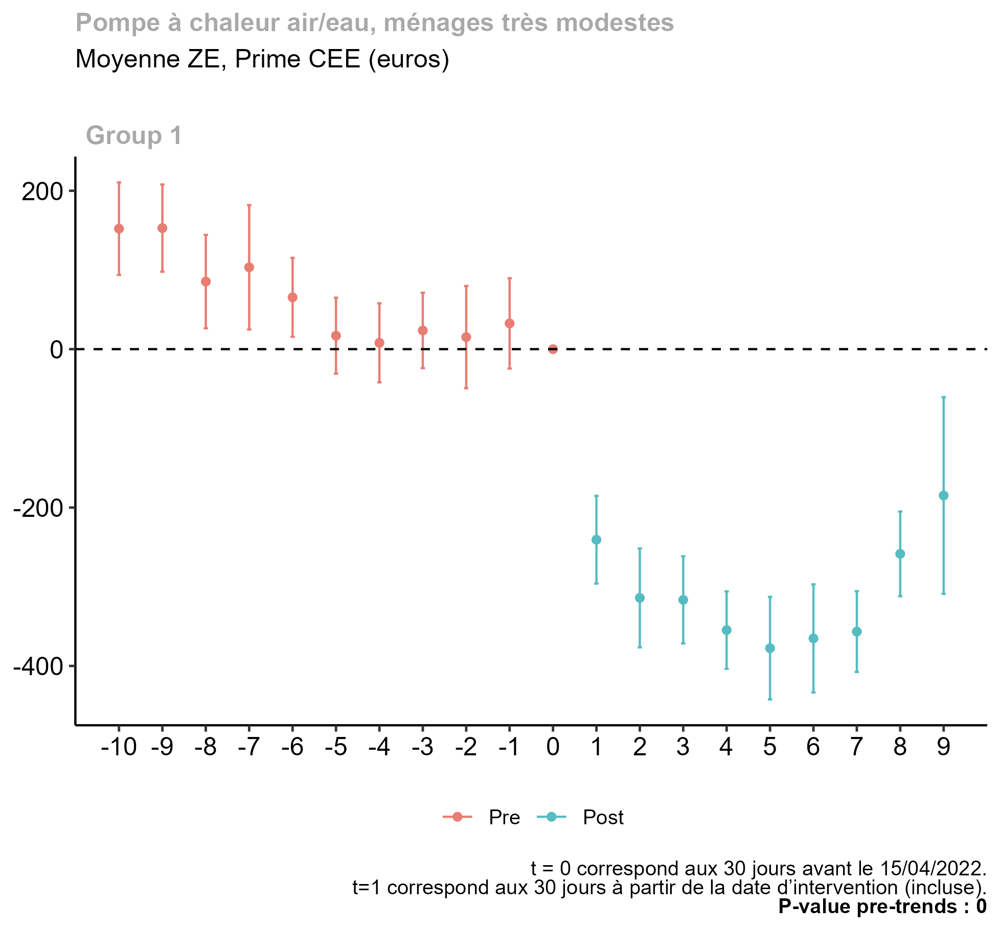
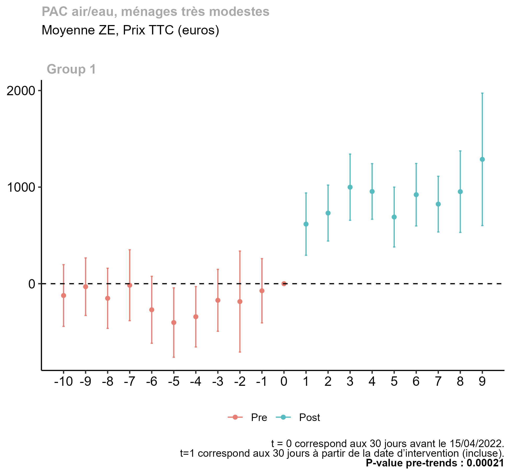
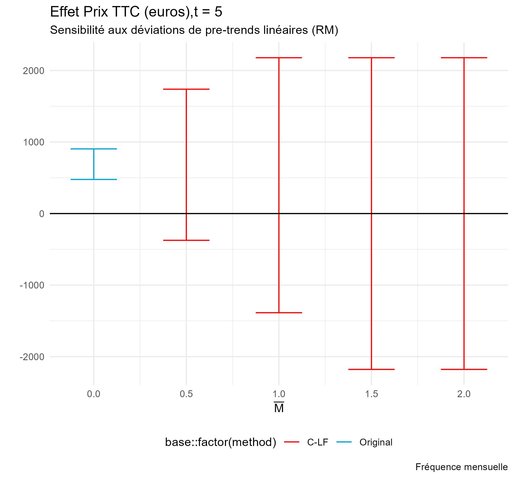
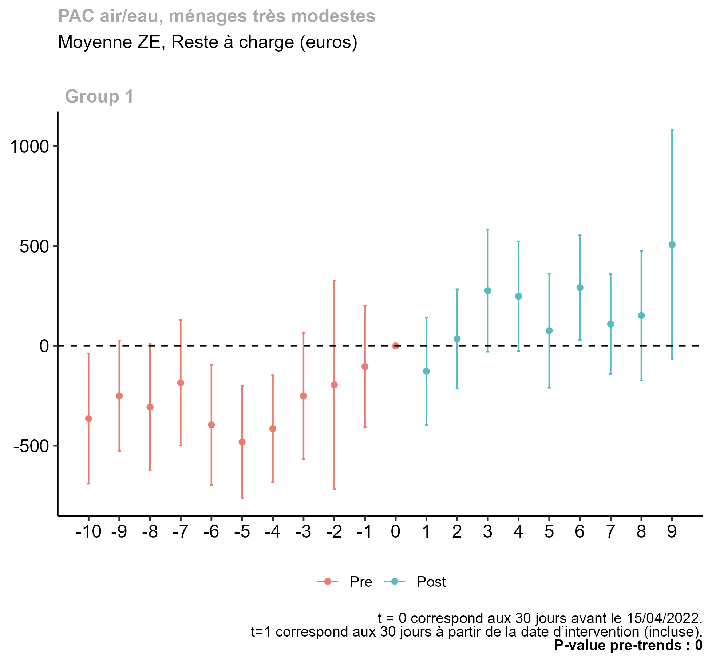

We carry out our estimates using the dataset of MPR grant applications produced by the National Agency for Housing (ANAH).
This dataset includes all MPR applications starting from the introduction of the programme in 2020, with the exception of larger-scale renovations (gestes d’ampleur) for lower-income households and improvements in copropriétés1.
Note that the relationship to the application processing system for MPR means that our dataset covers all MPR applications, and all house renovations which benefited from MPR grants ; however, all improvements for which MPR was not sought thus remain outside of the scope of our dataset. In other words, we study only a small subset of all energy efficiency renovations carried out in France.
We focus on improvements carried out by the lowest income category of households, as these receive the highest amount of MPR subsidy and have the most generous ceiling in terms of overall support received as a percentage of the price of the works (90%). Furthermore, we only study those investments which have benefited from both MPR and CEE support.
The dataset provides information on the overall application, as support can be requsted for multiple improvements within one application, and some characteristics of the applicant. For each individual improvement, we obtain the price as well as the amount of MPR, CEE, and any other subisidies received by the applicant3.
The dataset contains variables relating to the MPR grant application procedure, but relatively little information on the applicant, the house being renovated, or the characteristics of the improvement itself, i.e. potential control variables. We use the fiscal reference revenue of the household as a control variable ; a summary of available variables is included in the annex.
Some extreme values for prices are present in the dataset, likely attributable to errors in filling out the applications. As a result, prior to aggregation, we remove from the data all observations with prices above the 999th quantile of the improvement type’s distribution4.
We limit the scope of our study to that of Metropolitan France, thus excluding from our sample 20 Employment Zones (out of 305 total).
Code snippet for aggregating & cleaning the dataset
# Checking for outliers in prices# The cutoff at Q999 is ad hoc, so to be refined (also winsorising rather than trimming the sample..)# The obs > Q999 are filtered out when aggregating into a panel dataset# mtttcplanfinsolde = Prix TTC du geste renseigné par le demandeur MPR# subtype = type de geste (PAC, chauffe-eau solaire, chaudière à granulés etc)# hometype = type de ménage par catégorie revenus (très modestes, modestes, etc)price_quantiles <- mpr_data[date <"2022-07-15"& date >="2021-01-01" ] %>%group_by(subtype,hometype) %>%summarise(q01=quantile(mtttcplanfinsolde, 0.001),q1=quantile(mtttcplanfinsolde, 0.01),q10=quantile(mtttcplanfinsolde, 0.1),q25 =quantile(mtttcplanfinsolde, 0.25),q50 =quantile(mtttcplanfinsolde, 0.5),q9 =quantile(mtttcplanfinsolde, 0.9),q95 =quantile(mtttcplanfinsolde, 0.95),q99 =quantile(mtttcplanfinsolde, 0.99),q999 =quantile(mtttcplanfinsolde, 0.999),max =max(mtttcplanfinsolde)) %>%arrange(hometype,subtype)mpr_monthly <- mpr_data %>%left_join(price_quantiles, by =c("subtype","hometype")) %>%filter(!mtttcplanfinsolde > q999 ) %>%summarise(across(cols_summarise, ~mean(as.numeric(.), na.rm=TRUE)),rfrsum=median(rfrsum),.by =c("rel_month","ZE2020","hometype","subtypename")) %>%rename_with(~names_summarised, all_of(cols_summarise))
To carry out our analysis of the effects of increasing MPR, we aggregate the data into a monthly panel dataset, with each observation unit consisting of a employment zone (EZ)-improvement type pair.
The outcome variables are thus the averages of the CEE subsidy, price charged for the improvement, and the out-of-pocket expense left to the household after subtracting both MPR, and CEE. These averages are for each combination of : month ; EZ ; and improvement type.
Methodology
Identification
For identification, we leverage a 2022 administrative decision to raise the grants for some types of improvements only for identification. In the context of the Russian invasion of Ukraine and the resultant concerns over energy prices and supply, the increase in MPR was part of a push by the French government to reduce national dependence on imported fossil fuels.
The decision was announced on March 16 2022, as part of the unveiling of France’s package in response to the energy crisis sparked by the Russian invasion of Ukraine, and made effective on 15 April 2022 ; the latter is the starting date at which the announced increases are made effective, based on the date at which the application for MPR funding was submitted. All dates referred to in this study will refer to this application submission date.
Defining the treated and control groups
We exclude from our sample insulation works and various other subsidised services (e.g. preliminary technical audits), leaving only discrete improvements (for instance, a solar-powered water boiler, or a heat pump)5. We study the response of outcome variables for heat pumps following the increase in their MPR subsidy, with solar-powered water boilers as the control group.
Throughout our sample, around 2000 heat pumps were installed on average per 30-day period, with a drop-off in the latter two periods covering mid-July to mid-September. This yields a control group with around 800 improvements carried out per month.
Nombre de gestes répertoriés dans la base MPR
Période de 5 mois avant l'augmentation du forfait MPR (15/04/2022)
Geste
Pré-intervention
Post-intervention
Groupe de Contrôle
Chauffe-eau solaire
9764
12407
Chauffe-eau thermodynamique
3245
5983
Groupe Traité
PAC air/eau
13222
24027
Estimation
We use Callaway and Sant’anna’ (2021)’s doubly robust estimation method, as implemented by the R package did. As mentionned in the previous section, units are defined at the combination of locality and improvement type. The treated group consists of installations of heat pumps ; the treatment is binary, corresponding to whether the MPR subsidies were increased on April 15 2022, and is thus also non-staggered. We control for the median fiscal reference revenue. The estimated model can be reframed in the terms of a classic TWFE regression :
\[Y_{i,t}=\alpha_i + \lambda_t + \sum_{k = -12; }^{12} \gamma_k*D_{i,t-k} + \beta*X_{i,t}+\varepsilon_{i,t}\] With \(Y_{i,t}\) the average at the level of \(i,\) the ZE and improvement type combination.
Results
CEE
Code for did estimation of CEE effects
did_pcae_tmo_cee<-att_gt(data= mpr_monthly %>%filter(subtype =="pcae"| subtype %in%c(subtypes_control_exventil) ) %>%filter(hometype=="TMO")%>%filter(rel_month >-12& rel_month <13),yname ="cee",tname ="period",idname ="zegeste", # unit = ZE x Gestegname ="treated_month",allow_unbalanced_panel =TRUE,xformla =~rfrsum, #revenu fiscal de référence tel que déclaréweightsname ="popweight",base_period ="universal")
Figure 1 shows the estimated effects of the MPR increase on average CEE funding received, which decreased by around 300 euros for the treated improvement type (heat pumps) compared to the controls (water boilers).
The joint test of significance of the pre-intervention coefficients clearly rejects the null hypothesis of no difference in trends between both groups prior to the MPR increase. Arguably, however, this rejection is driven by a difference in trends which appears to be insignificant starting from 3 periods (6 months from t=0) before the shock.
Peut-être un lien avec la fin de période CEE ? Le coefficient à t = -2 correspond à la période ~15/10-11/2021 [mais pourquoi la fin de période CEE affecterait de manière différenciée les PAC et les chauffe-eau ?]
The HonestDID analysis shows that assuming the deviation in trends from t=-5 to t=-2 persisted over the entire sample, the estimated CEE response cannot be attributed to the MPR increase6.
[Les résultats pour le CEE sont au pas de 60j pour l’instant - a priori on va rester sur 30j ?]
Figure 1: Estimated effects on CEE grants.
NoteHonestDID analysis : CEE response
We use the HonestDID package to assess the sensitivity of the estimated response of CEE to deviations from parallel pre-trends. - We examine the estimated response at t=3 (mid-August to mid-October 2022).
Code for HonestDID analysis of CEE response
aggte_ceebimonthly =aggte( did_pcae_tmo_cee_bimonth,type ="dynamic")hdid_cee_agg_RM =honest_did(aggte_ceebimonthly,type="relative_magnitude",e =3,Mbarvec=seq(from =0.5, to =2, by =0.5))hdid_cee_agg_SD =honest_did(aggte_ceebimonthly,type="smoothness",bias ="negative",monotonicity ="decreasing",e =3)
NoteResults with 30-day periods

Figure 2: Estimated effects on CEE grants.
Price of improvements
Code for did estimation of price effects
did_pcae_price <-att_gt(data= mpr_monthly %>%filter(subtype =="pcae"| subtype %in%c(subtypes_control_exventil)) %>%filter(hometype=="TMO")%>%filter(rel_month >-12& rel_month <13) %>%filter(!is.na(price)),yname ="price",tname ="period",idname ="zegeste",gname ="treated_month",allow_unbalanced_panel =TRUE,weightsname ="popweight",xformla =~rfrsum,base_period ="universal") # NB : point estimates and esp SEs are sensitive to risk_seuil control

Figure 3: Estimated effects on price of the improvement, heat pumps, low-income households.
The MPR increase may have caused an increase in the price of heat pump installations relative, approximately 700 euros7, although the confidence intervals are rather wide.
At this stage caution must be exercised in interpreting this estimate :
As explained in the Data section, the “price” is the bill faced by the household for the equipment as well as its installation. Our dataset does not include explicit measures of the performance of the equipment, so the apparent price increase may instead reflect that the higher subsidy enabled low-income households to invest in better equipment8.
The joint test rejects the null hypothesis of no difference in pre-intervention trends. Although the individual point estimates are rather imprecise, from t = -5 (mid-October 2021) there does appear to be an upwards deviation of the trend in the price of heat pumps relative to that of the control group.
The HonestDID analysis shows that the estimated post-intervention coefficients are not robust to the pre-intervention deviations from parallel-trends.
NoteHonestDID analysis : CEE response
We use the HonestDID package to assess the sensitivity of the estimated response of CEE to deviations from parallel pre-trends. - We examine the estimated response at t=4 (mid-August to mid-September 2022)9.
Code for HonestDID analysis of price response
aggte_price =aggte(did_pcae_price,type="dynamic")hdid_price_SD =honest_did(aggte_price,type ="smoothness",bias="positive",e=4,)hdid_price_RM =honest_did(aggte_price,type="relative_magnitude",Mbarvec=seq(from =0.5, to =2, by =0.5),e=4,)

Out-of-pocket expenses [traduction de reste à charge ?]

Figure 4: Estimated effects on the out-of-pocket expenses.
Here we show the estimated effect of the MPR increase on the part of the renovation expenses which must be financed by the household themselves (i.e. : the price, minus MPR and CEE financing). - Overall, the estimates show the same pre-intervention pattern as in the case of the price variable, i.e. a positive difference in pre-trends starting from October 2021.
Footnotes
A venir avec l’ajout de la base CASD correspondante↩︎
Local governments in particular may have their own schemes supporting energy efficiency improvements ; within our sample, these appear to have been very rarely used.↩︎
Il y a probablement une manière plus sophistiquée de faire ça ?↩︎
We focus on heat pumps, which provide the largest sample size, setting aside the analysis for pellet heaters.↩︎